高频交流损耗:从单线趋肤效应到 484 股完整换位编织
全部数值来自实际求解:有限元数据取自已求解的 .mph 工程,解析 / PEEC 数据来自随文档交付、可直接重跑的 MATLAB 脚本;两侧以 CSV 数据接口互校。
本文核心结论:细径化只消除丝内趋肤,却把损耗转移到丝间邻近; 结构性换位——让每股轨迹 r(z) 在结构周期内真正遍历所有径向层——才是把 Rac/Rdc 从 3.647 一路压向 1 的决定性手段。
结果概览
统一工况 · 等铜截面对比| 问题 | 赛题要求 | 本站回应 |
|---|---|---|
| 问题一 · 15 分 | 走通趋肤效应仿真流程,理论交叉验证 | FEM 与 Bessel 解析偏差 0.005% · 网格收敛与频扫验证(FIG 01–02) |
| 问题二 · 20 分 | 设计第一根 Litz 线并对比实心线 | 331 股三步定量设计链 · 三束形等截面对比 · 不均流机理与 PEEC 交叉验证 |
| 问题三 · 30 分 | 编织方案系统调优,≥3 种方案对比 | 四结构统一条件 COMSOL 对比 · 129 预定候选 · ROM 盲预测 · 同外径反例诚实边界 · 130 项审计 |
| 问题四 · 35 分 | 完美编织探索与成果展示网站 | 等停留全遍历判据 · 484 股拓扑数学描述 · 同约束对比(−67%)· 间隙保守界与制造讨论 · 本站即交付物 |
问题一 · 实心导线趋肤效应
对应赛题任务:δ 推导 → 建模 → J(r)/Rac → 验证与网格收敛导体内轴向电流密度满足 Bessel 方程;MATLAB 在 Nr=4001 径向网格上计算 |Jz(r)|,与 COMSOL 二维轴对称 FEM(Magnetic Field Formulation,2313 DOF) 在同一图上对照。
| 对照量(归一化到表面值) | 最大偏差 |
|---|---|
| 幅值 |J|:COMSOL FEM vs MATLAB 解析 | 0.0050% |
| 复数 Jz(实部+虚部) | 0.0394% |
| 电流积分实部(电流守恒) | 20.000000000 A |
| 表面 / 轴心电流密度有效值 | 31.60 / 0.279 A/mm² |
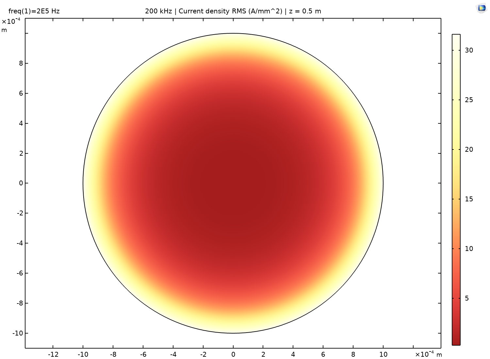
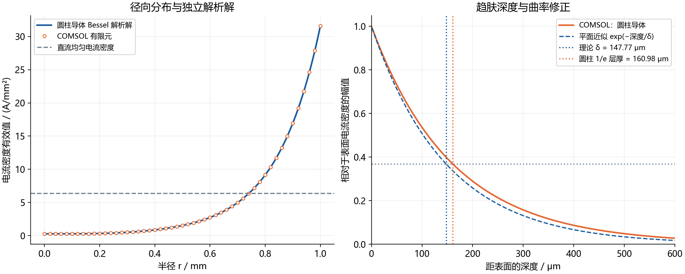
截面圆盘:颜色 = |J(r)|/|J(a)|(对数增强);白色虚环标记趋肤深度 δ。右侧为径向分布对数曲线。 拖动频率,观察电流层如何随 δ=√(2/ωμσ) 收缩。问题一为校验基准(非寻优),无"最优值"—— 故标注全赛统一参考工况 ★ 200 kHz:δ=147.8 μm、a/δ=6.77、Rac/Rdc=3.647,与问题一仿真一致。
问题二 · 设计第一根 Litz 线
331 股 × Ø0.14 mm · 等铜截面 5.095 mm² · 三种束形对比| 参数 | 采用值 | 依据 |
|---|---|---|
| 裸铜丝径 d | 0.14 mm | β<1,单丝趋肤可忽略 |
| 相邻中心距 p | 0.15 mm | 铜表面间隔 10 μm |
| 总铜截面 ACu | 5.0953 mm² | ≥5 mm² 温升约束 |
| Jdc | 3.925 A/mm² | <4 A/mm² ✓(直流约束) |
| 裸铜包络直径 | 3.14 mm | 2×10p+d,不含护套 |
| Rdc | 3.3837 mΩ/m | 1/(σACu) |
各股位置不同 → 磁链与互感耦合不同:外层股链过的束内磁通少、串联电感小, 分走更多电流;中心股被其余股磁场包围,感应涡流抵消其净电流。 未换位时这种差异沿全长保持不变——
| 理想均流(20 A / 331 股) | 60.42 mA |
| 外层股实际电流 / 中心股 | 258.6 / 0.54 mA |
| 60 根外层股承担的损耗占比 | 80.75% |
| 电流不均衡度 ηI(圆形 / 绞合) | 338% / 321% |
| 股间分配失衡超额损耗 | 4.21 W/m ≈ 3× 直流基准 |
绞合使中心股电流回升至 3.68 mA,但 Rac 仅降 3.35%——周向换位对均流的贡献 远小于径向换位,这正是问题三要解决的问题。
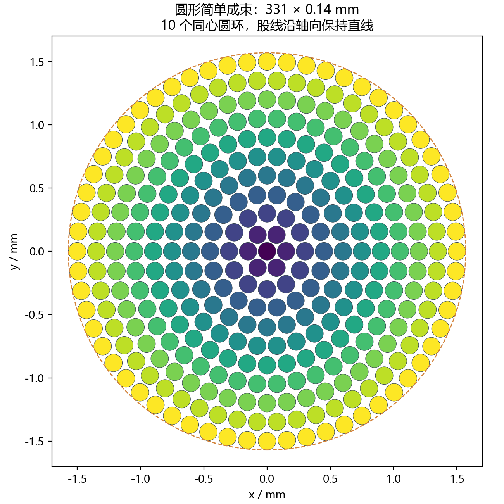
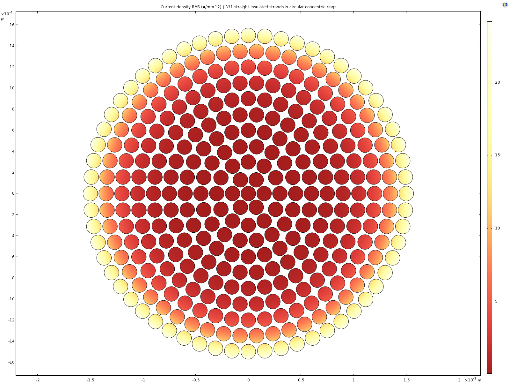
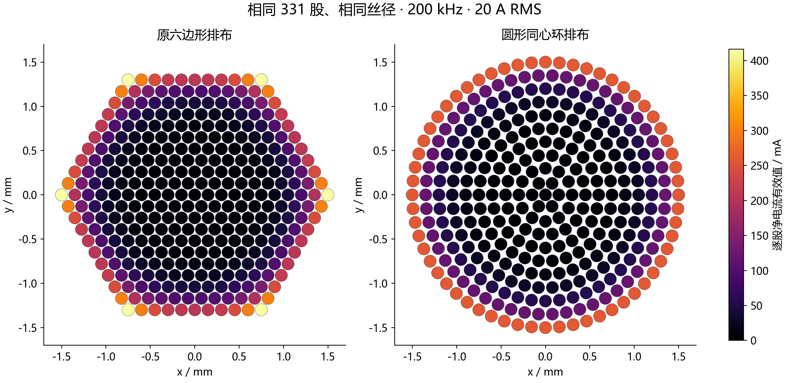
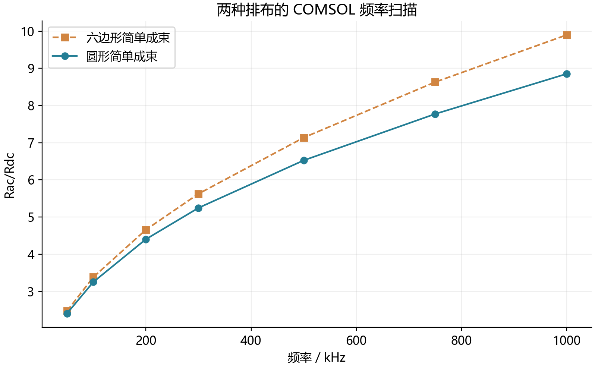
与 COMSOL 同构但完全独立的快速模型:每股一个复电流变量,内阻抗用 Bessel 精确式, 外部互感用 ln(1/dij) 细丝形式,并联共压 + 总电流约束;绞合另加线长因子、 输运约束与互感方向余弦三项修正。
| 校验项 | PEEC | COMSOL | 复现度 |
|---|---|---|---|
| 孤立单丝 Rac/Rdc | 1.001048 | 1.001048 | 逐位一致 |
| ΔRac(圆形 − 六角) | −0.790 mΩ/m | −0.863 mΩ/m | 91.5% |
| ΔRac(绞合 − 圆形) | −0.321 mΩ/m | −0.498 mΩ/m | 64.5% |
| Rac 绝对水平 | 系统性低 2.5–3.9% | 基准 | 缺口 = 未解析的股内邻近损耗(0.21–0.47 W/m) |
相对比较精度远高于绝对精度——PEEC 适合问题三的参数扫描与方案排序,最优点再交 COMSOL 精算。
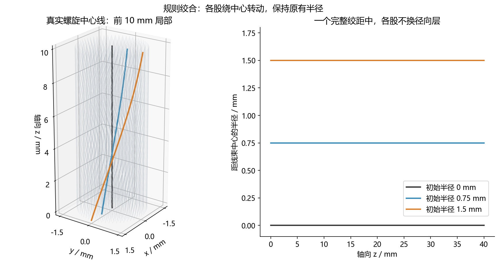
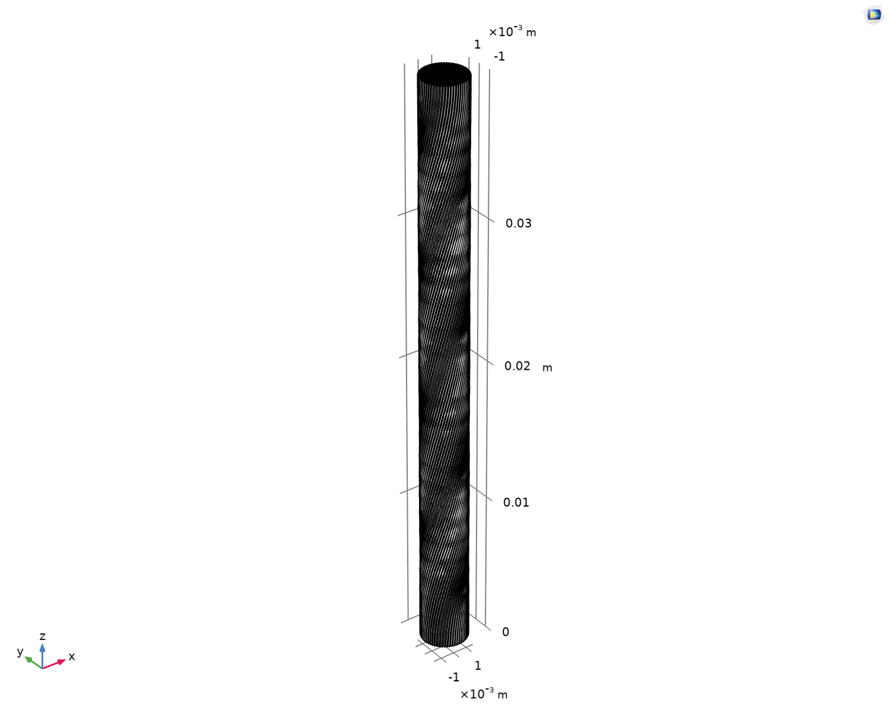
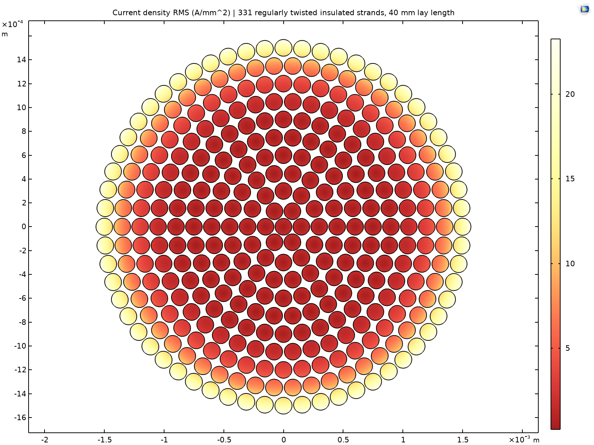
「电流幅值」按 COMSOL 实测每股电流着色——束级趋肤效应立体可见: 外层股发亮、中心股近乎熄灭,对应 258.6 / 0.54 mA 的悬殊对比;「按环层」显示十层同心结构。 每股径向位置沿全长不变,这正是绞合换位不彻底的直观呈现。
| 量 | 数值 | 说明 |
|---|---|---|
| 绞合节距 | 40.0 mm | 每轴向米 25 圈,绞率 157.08 /m |
| 外层螺旋角 | 13.258° | 外层每股长度 1.0274 m(每轴向米) |
| 铜体积增量 | +1.507% | 绞合使每股走螺旋路径,铜量略增 |
| 三维几何工程 | 完整 1 m + 单节距 | Q2_RegularTwist3D_OnePitch.mph,331 股独立螺旋精确建模 |
| Rdc / Rac | 3.4345 / 14.4012 mΩ/m | 按轴向米计 |
| Rac / Rdc | 4.1931 | vs 圆形 −3.35% · vs 实心 −6.87% |
| 每米铜损 | 5.7605 W/m | I = 20 A rms |
问题三 · 编织方案仿真调优
四结构统一条件 COMSOL 对比 · 129 预定候选 · 真三维周期场复算| 结构 | Rdc / mΩ·m⁻¹ | Rac / mΩ·m⁻¹ | Rac/Rdc | 铜损 / W·m⁻¹ | 外径 / mm |
|---|---|---|---|---|---|
| 圆形粗线(等面积实心) | 2.8736 | 14.184 | 4.936 | 5.674 | 2.764 |
| 简单成束(紧密直线) | 2.8736 | 14.037 | 4.885 | 5.615 | 3.593 |
| 规则扭转(单级 96 mm) | 2.8816 | 14.174 | 4.919 | 5.670 | 3.594 |
| 两级 4×16(−16 / +128 mm) | 2.8927 | 13.156 | 4.548 | 5.262 | 4.531 |
统一口径:铜面积 6 mm²、总电流 20 A RMS、200 kHz、σ=5.8×10⁷ S/m、按轴向 1 m 归一(P=I²R=400R)。 各股电气绝缘、仅约束总电流,不预设每股 20/64 A。规则扭转经螺旋坐标三分量模型复核。
| 指标 | 定义 | 本题结果 |
|---|---|---|
| 交直流电阻比 Rac/Rdc | 核心目标,越接近 1 越好 | 两级 4.548 最低(其余 4.885–4.936) |
| 均流偏差(复数) | max|Ij−Ī|/Ī,含幅值与相位 | 403.5% → 163.6% |
| 每米损耗 P = I²Rac | 工程发热量 | 两级 5.262 W/m(四者最低) |
| 换位充分性 | 各股径向履历一致性 | 两级非完全换位,64 股不全部到达中心 |
| 结构 | 候选数 | 变量 |
|---|---|---|
| 单级 64 股紧凑六角 | 3 | 外级节距 64 / 96 / 128 mm |
| 两级 4×16 | 18 | 内级 ±16/32/64 × 外级 64/96/128 |
| 三级 4×4×4 | 108 | 内、中级节距与四种 ± 绞向组合 |
100 个可行、29 个因几何约束拒绝(记录保留)。筛选边界(自设研究假设):外径 ≤6 mm、 丝长增长 ≤10%、绞角 ≤30°、弯曲半径 ≥10 d、间隙 ≥10 μm。
允许简单成束使用与两级方案相同的 4.531 mm 外径(均匀扩大中心间距,最小裸铜间隙 151.4 μm)后, 其铜损为 4.831 W/m——比两级方案还低 8.20%。 因此两级方案只能称为原固定间隙候选集合内的最优,不能称为所有结构与参数上的全局最优; 且外径、用铜量并未完全对齐(两级外径较规则扭转 +26.05%、铜体积 +0.66%),「等铜截面」≠「等铜质量」≠「等安装空间」。
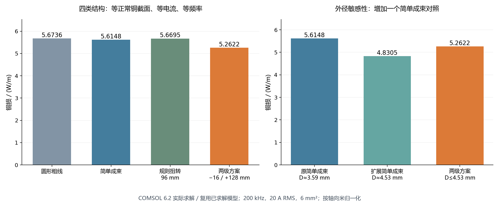
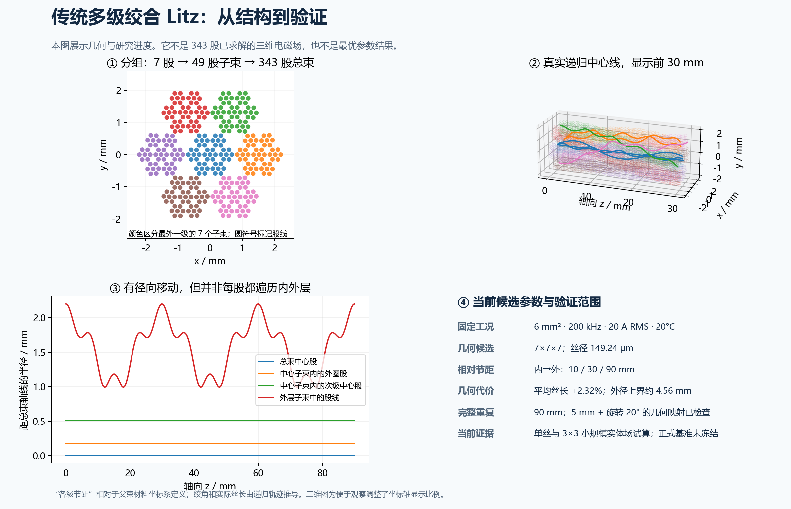
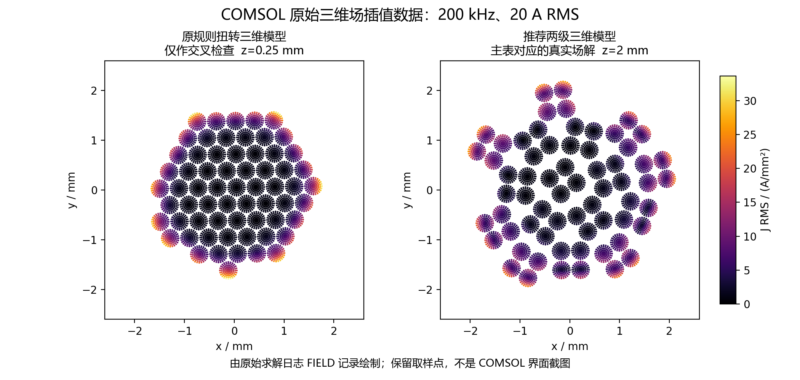
每根铜丝建立独立三维实体,导线外为不导电域;低频磁准静态近似下 全耦合求解磁矢势 A 与周期电势 φ:J = σ[−∇φ − jωA + (V₀/L)ez],∇·J = 0, 采用静态 Coulomb 规范。每条周期股线映射闭环仅设电势参考点——不给任何一股预设 I/N, 电流分配完全是求解结果。外部圆柱半径 6 mm 磁绝缘,另以 10 mm 空气域验证边界影响。
Python 降阶模型(ROM)仅用于筛选:开发集 1 例 + 独立验证集 3 例盲预测(结果产生前封存), 门槛 5%;一个新三级样本偏差 −5.35% 超标后,未验证候选不再自动预测,限制已记录在案。
| 项目 | 规则扭转 96 mm | 两级 4×16 |
|---|---|---|
| 内→外节距 / mm | 96 | −16 / +128 |
| Rdc(10 Hz 极限)/ mΩ·m⁻¹ | 2.8816 | 2.8927 |
| Rac(200 kHz)/ mΩ·m⁻¹ | 14.1738 | 13.1555 |
| Rac/Rdc | 4.9187 | 4.5478 |
| 20 A 铜损 / W·m⁻¹ | 5.6695 | 5.2622 |
| 外径保守上界 / mm | 3.594 | 4.531 |
| 平均丝长增长 | 0.280% | 0.665% |
| 最大局部绞角 | 6.07° | 10.44° |
规则扭转本次采用螺旋坐标三分量电磁模型复核(保留真实法向圆丝截面与三方向电流):复核值 5.6695 W/m, 较旧一阶三维值 5.7260 W/m 低 0.996%——旧「−8.10%」的降幅口径以复核值为准,即 −7.18%。
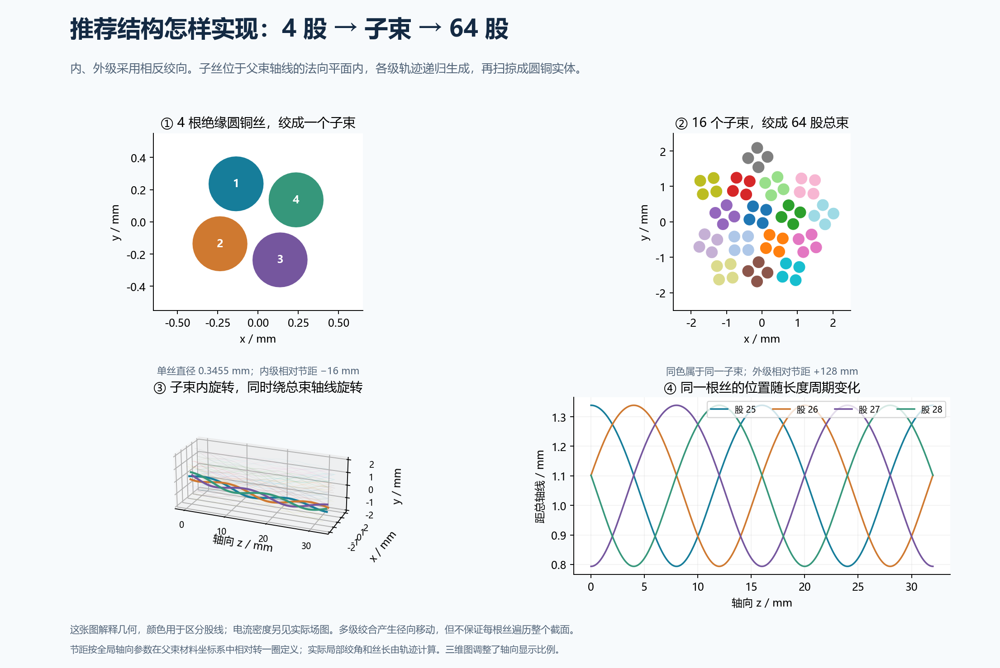
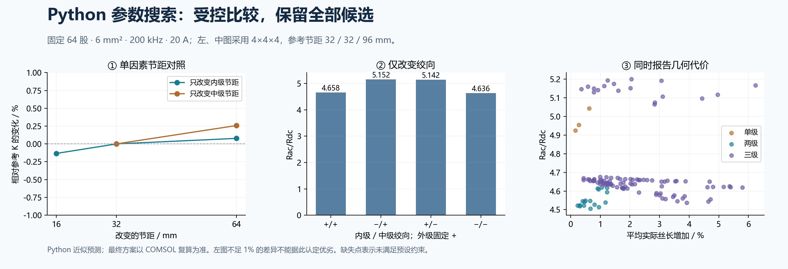
「16 子束」着色直接呈现递归结构:同一色相 = 同一外级 16 股子束,明度区分束内 4 股; 「电流幅值」按 COMSOL 实测每股电流着色(亮=大电流);「逐站扫描」观察内级反向绞合与外级绞合的叠加。 拖拽旋转 · 滚轮缩放 · 右键平移。
「电流幅值」按 COMSOL 实测每股电流着色(亮=大电流);「环层」按六角环层着色——外层股电流显著高于内层,即规则扭转未解决的邻近效应。 对照结构 A(两级)可见内级反向绞合如何把子束拆开换位。拖拽旋转 · 滚轮缩放 · 右键平移。
· 两级方案仅为原固定 40 μm 间隙候选集合内的最优;同外径直线成束反例(4.831 W/m,低 8.20%)说明它不是全局最优;
· 「等正常铜截面」≠「仅变拓扑」:外径、排布、实际线长仍随结构变化(两级外径 +26.05%、铜体积 +0.66%);
· 旧一阶三维网格约 1% 离散偏差,二阶互验后仅 0.0196%;规则扭转旧值比螺旋复核值高 0.996%;
· 两级结构 64 股并非全部到达所有径向位置,不能称为完全全局换位(判据见问题四);
· ROM 新三级样本偏差 −5.35% 超 5% 门槛,未经新验证的候选不再自动预测;
· 未纳入:变股数/丝径、扫频、温升反馈、介质损耗、端部接头、成本与疲劳;全部为数值模型,无实物测量。
| 圆形粗线 vs Bessel 解析 | COMSOL 相对误差 0.000138% |
| 逐股电流相量和(应 = 20 A) | 残差 ~10⁻¹² A |
| 功率守恒 P = I²Rac | 残差 ~10⁻¹⁴(相对) |
| 四结构网格末两档 Rac 变化 | −0.001% ~ −0.0029% |
| 交付完整性审计 | 130 项 + 新模型哈希全部通过 |
| 求解资源(推荐方案) | 632 s · 4 线程 |
审计覆盖 Java 源、输入参数、求解日志与 .mph 的 SHA256 全链比对;四个新增模型均含完整日志与含解 MPH,原始证据目录随交付包提供。
问题四 · 追寻「完美编织」
完美换位判据 · 拓扑数学描述 · 仿真对比 · 可制造性 · 展示网站(本站)截面内 22×22 个位置由经过每个位置一次的闭合蛇形路线 C(u) 连接 (C(u+484)=C(u)),周期三次样条平滑;484 根单丝按路线顺序分布,沿轴向同步连续前移。 第 j 股在 z = kP/484 处占据槽位 (j+k) mod 484—— 单一 484-循环置换,k = 0…483 覆盖全部槽位且停留时间严格相等。
判据:各股槽位占用函数为等停留的全遍历置换 ⇔ 每股经历相同的 径向位置序列与相同的停留份额 ⇔ 电磁履历一致。三原则:闭合路线覆盖全部位置 · 同步连续前移 · 线间保留空间。单纯绕总束轴旋转保持半径不变,不构成完整换位。 等价于换位充分性偏差 Dshell = maxi Σm |pi,m − Am/Atot| → 0 (各股壳层停留占比 pi,m 趋近面积加权均匀 Am/Atot)。
δ=同 z 截面中心距下界 153.84 μm,M=横向斜率上界 0.2521,得三维中心距保守界 149.17 μm。 对每段样条的距离平方多项式用 Bernstein 凸包界 + 区间二分, 全部 116,886 对经斜率排除后精查 7,598 对——比离散采样多一层连续区间保证。
| 单侧漆膜 t | 0 μm | 4 μm | 8 μm | 12 μm |
|---|---|---|---|---|
| 三维表面间隙下界 | 23.54 μm | 15.54 μm | 7.54 μm | −0.46 μm |
最小弯曲半径 ≈2.006 mm(铜外纤维应变 ≈3.13%,需弯绕试验);方包络名义填充率 26.4%(非密堆)。 工艺设想:连续收线 + 导向位置按相位依次移动;线盘/张力/摩擦/公差未验证。 负下界仅表示此法不能保证无干涉,非已证明相交。
484 股完整换位轨迹的三维交互展示:每股沿 500 mm 周期遍历全部槽位(问题四拓扑)。 拖拽旋转 · 滚轮缩放 · 右键平移;「拓扑」可切换整体扭转 / 壳层交换 / 完整换位概念对照; 「透视 · 高亮 8 股」配合「逐站扫描」可直观看到换位历程;右侧同步显示各站位截面。 渲染网格仅用于展示,非 CAD 扫掠实体布尔验证。
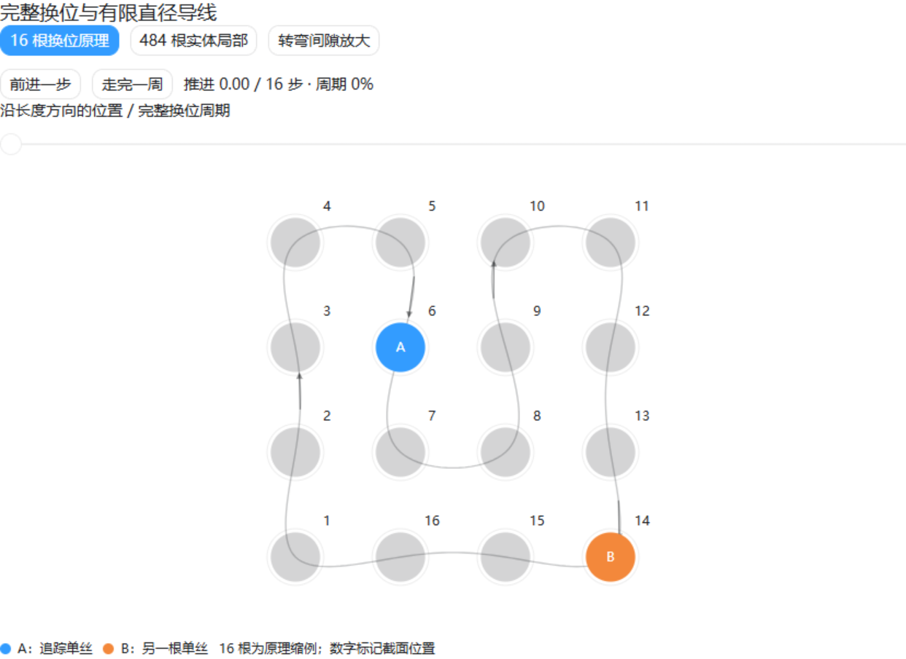
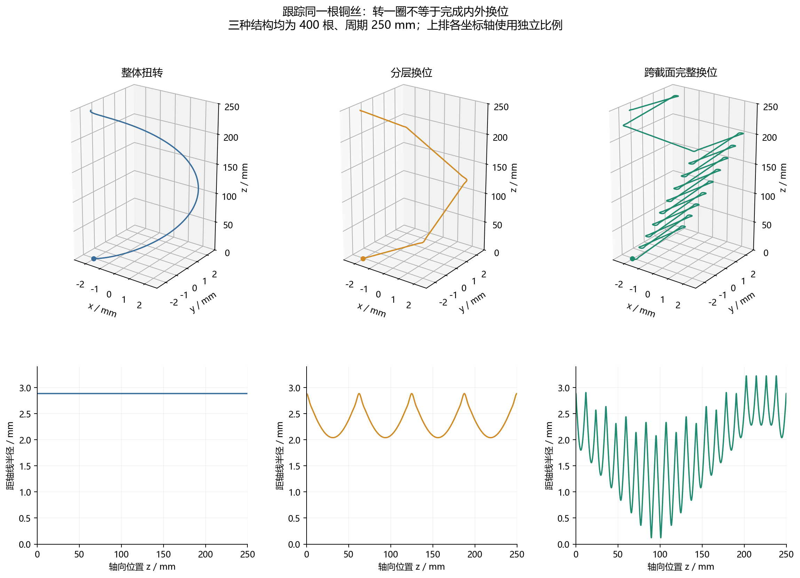
| 项目 | Q3 推荐 4×16 两级 | Q4 完整换位 |
|---|---|---|
| 股数 × 丝径 | 64 × 0.3455 mm | 484 × 0.1256 mm |
| Rac/Rdc | 4.5478 | 1.4971 |
| 每米铜损 / W·m⁻¹ | 5.2622 | 1.7592 |
| 复数均流偏差 | 163.6% | ≈10⁻¹³(N=400 对照) |
| 求解方法 | 真三维 COMSOL 周期场 | 准三维(截面 FEM+换位电路) |
等总铜截面 6 mm²、200 kHz、20 A 下完整换位再降 67%;两方案方法学不同(准三维 vs 真三维), 对比结论以各自独立验证为准。完整换位在 0.2% 近优带内取铜耗最低候选,数值最小与推荐候选 K 相差 0.00000%。
本站即为问题四交付物:公开 URL + 源码仓库、四问数据展示、 交互式三维编织模型与逐站截面动画、双主题与打印适配。
边界:完整换位结论基于准三维方法(真实 COMSOL 截面 + 连续三维换位电路, 含碰撞检查),非完整三维体网格涡流模型;几何为理想圆管假设,未做 CAD 布尔验证; 漆膜 8 μm 为展示假设;未纳入温升、介质损耗、端部效应与制造公差。 高填充率需重新优化转弯路线与换位顺序,而非仅缩小包络(可证明的压紧余量仅 ~1.8%)。
数值验证
守恒 · 收敛 · 极限 · 独立性 —— 贯穿四问的证据链| 校验项 | Q1 | Q2 圆形 | Q2 绞合 |
|---|---|---|---|
| 电流积分实部 / A | 20.000000000 | 19.9999999999 | 20.0000000001 |
| 末次网格加密 ΔRac | — | 0.00028% | 0.00029% |
| 外边界无关性(空气域 40 mm) | — | 1.2×10⁻⁷% | 0.021% |
| 低频极限(10 Hz)Rac/Rdc | — | 1.000007 | 1.000007 |
| 零绞合极限(绞率 → 0) | — | 基准 | 6.7×10⁻⁵% |
| 功率平衡相对误差 | — | 1.2×10⁻¹¹ | 1.7×10⁻¹¹ |
| 网格自由度 | 2 313 | 153k → 176k | 同量级 |
独立验证工程(空气域 40 mm 外边界、10 Hz 低频、零绞合极限)与已解 .mph 一并交付,任何数值均可复核。
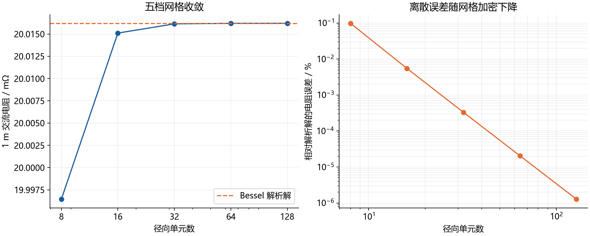